Galerie
Z ringu i ze zákulisí
Zápasy, sparingy, tréninky venku i v tělocvičně. Klikni na kolečko, vyber si, co chceš vidět, a fotku si otevři celou.
Fotky se ukážou, až si vybereš. Začni kolečkem Vše.
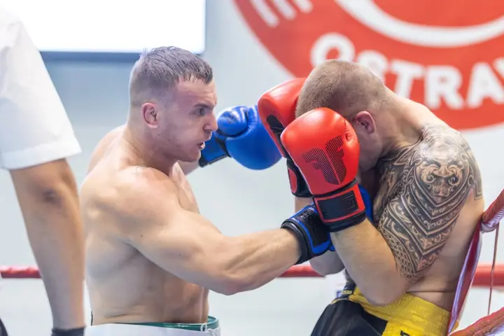
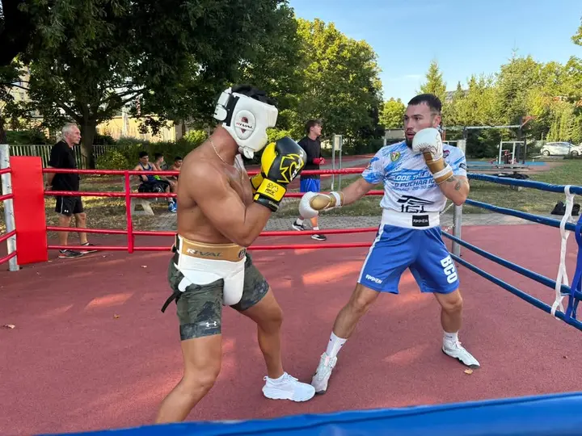
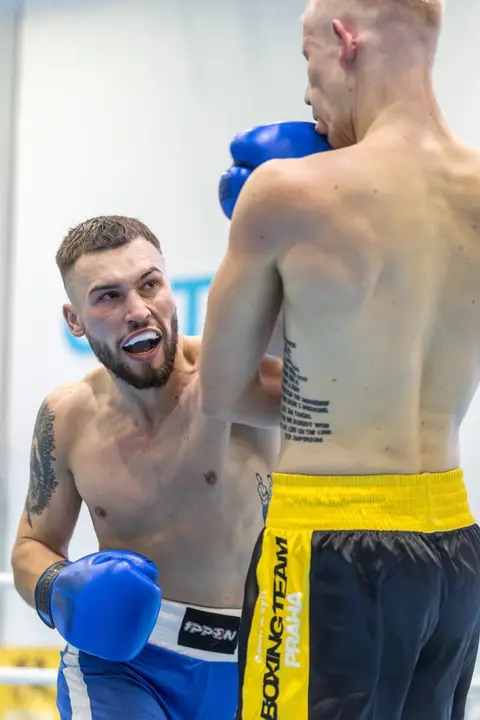
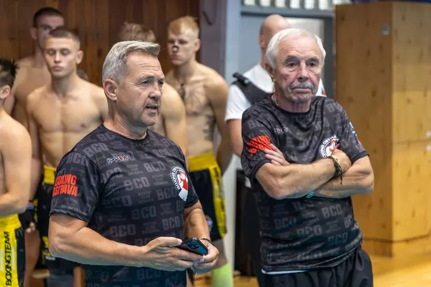
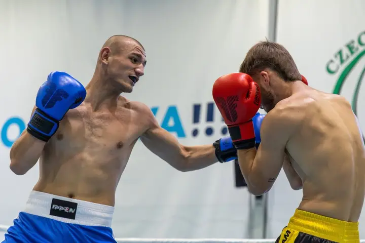
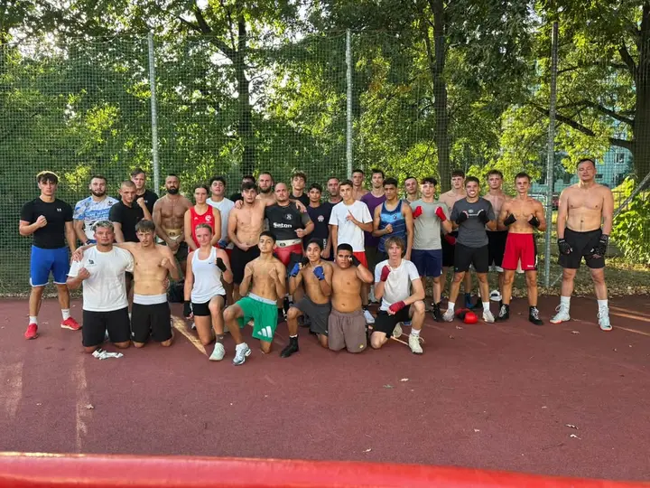
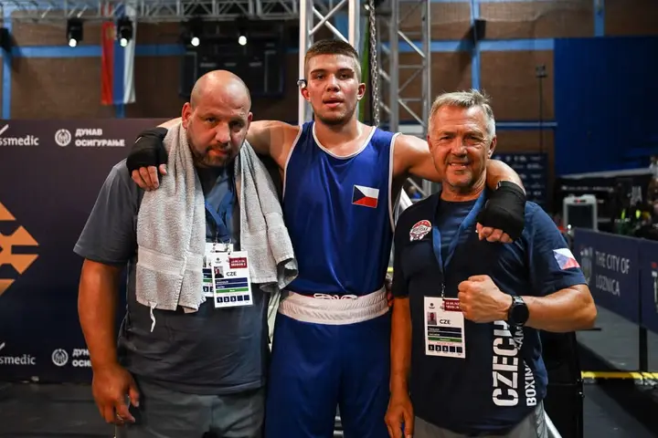
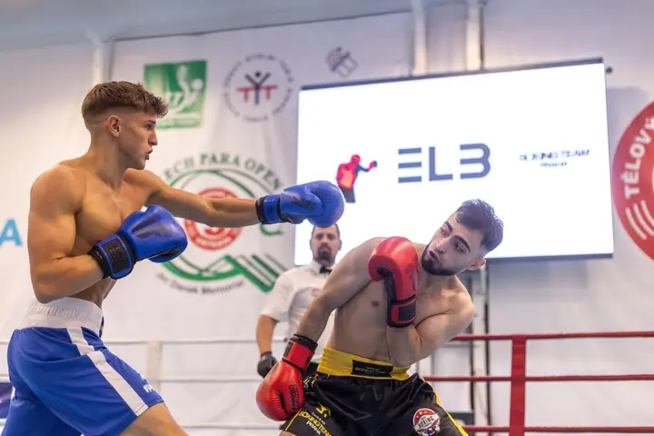
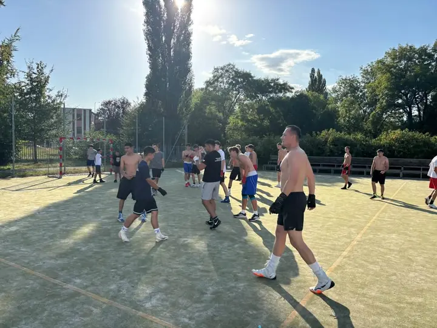
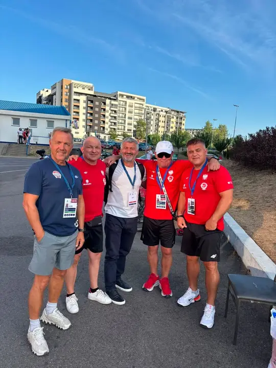
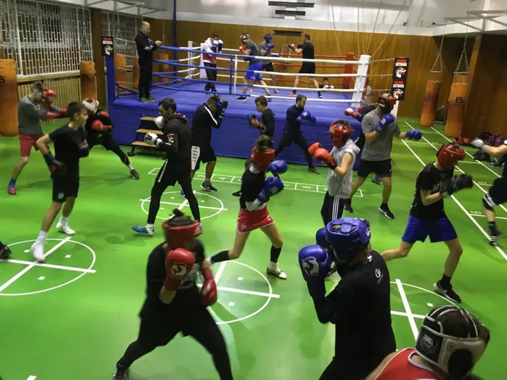
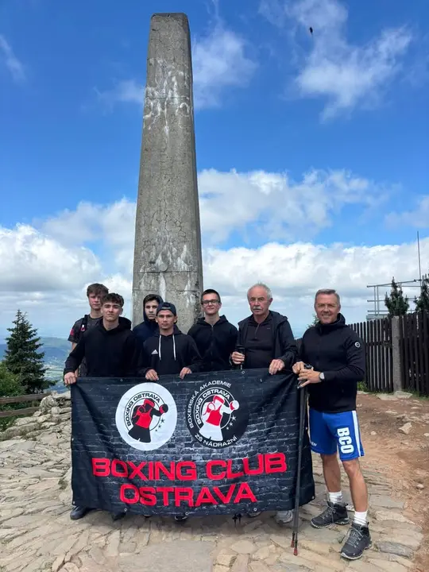
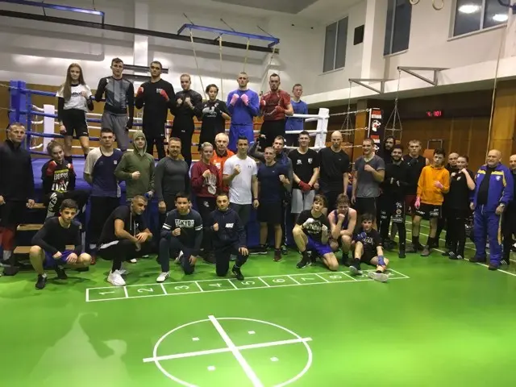
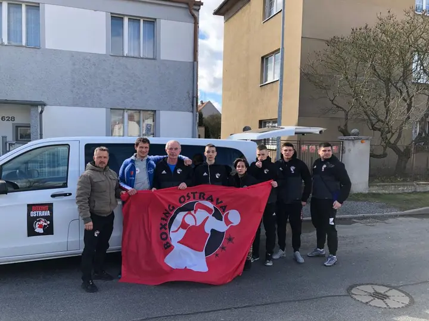
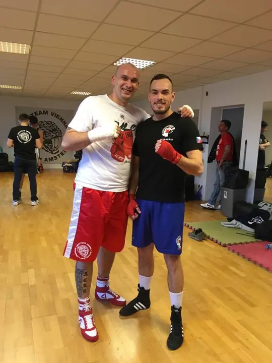
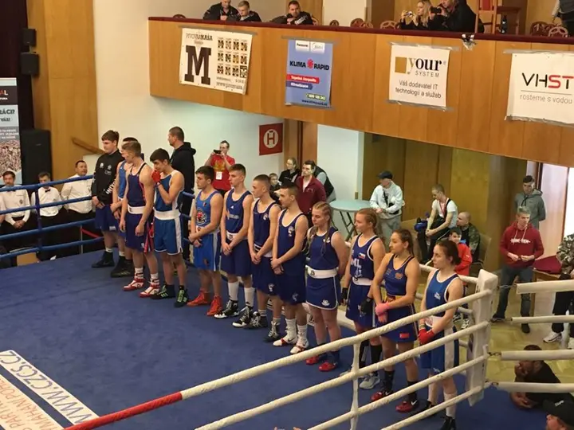
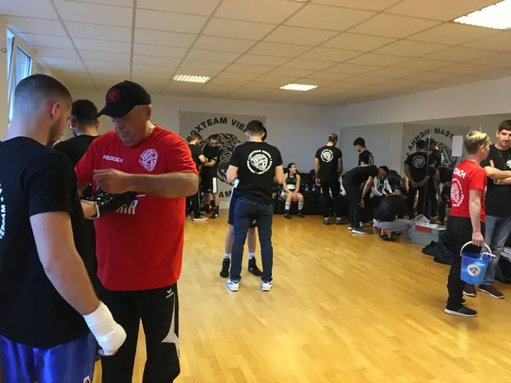
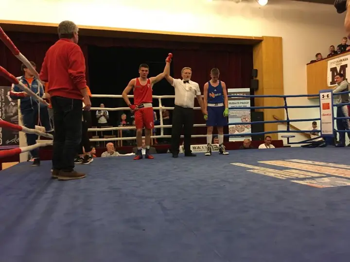